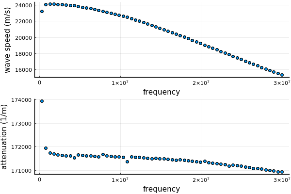

Quick introduction
How do you take a reliable measurement of a material whose microstructure is random? For example, the microstructure may have randomly placed particles. When using wave scattering or spectroscopy, each measurement can lead to a different outcome. Lots of example are shown in the package MultipleScattering.jl.
To obtain a repeatable measurement we can take an average of several measurements (average over time or space). This is the same as taking an ensemble average over all possible arrangements of the microstructure. This package calculates the ensemble average of scattering and transmission fields for acoustics, and potentially elastic waves and electromagnetic waves. For an overview of the mathematics, see Theoretical background.
This package calculates the average scattered and transmitted wave for a number of scenarios, including: in a plate, a sphere, and a halfspace (links needed). In all these scenarios, the first step is to calculate the effective wavenumbers.
Below we calculate the effective wavenumbers for water and some gas (two species) randomly distributed in Glycerol. We use only low volume fraction methods for simplicity.
Define the material
using EffectiveWaves
# where: ρ = density, r = radius, c = wavespeed, and volfrac = volume fraction
spatial_dimension = 3 # for 3D material
# we use the type Acoustic when we only want to consider pressure waves
glycerol = Acoustic(spatial_dimension; ρ = 1.26*1000, c = 1904.0)
water_distilled = Acoustic(spatial_dimension; ρ = 0.998*1000, c = 1496.0)
water_radius = 30e-6
gas = Acoustic(spatial_dimension; ρ = 1.0, c = 1.0)
gas_radius = 1e-6
# by supplying only a radius we are assuming the particles are spheres, although other particle shapes are allowed.
species = [
Specie(water_distilled, water_radius; volume_fraction = 0.1)
Specie(gas, gas_radius; volume_fraction = 0.01)
]
# background medium
background = glycerolFor a list of other materials go to ../examples/materials.jl.
Calculate effective wavenumbers:
# angular frequencies
ωs = LinRange(0.01,1.0,60)*30.0e6
ks = wavenumber_low_volumefraction(ωs, background, species)
speeds = ωs ./ real.(ks)
attenuations = imag.(ks)Plot the results
using Plots
pyplot(linewidth=2.0)
p1 = scatter(ωs, speeds, lab = "", ylabel = "wave speed (m/s)", xlabel = "frequency");
p2 = scatter(ωs, attenuations, lab = "", ylabel = "attenuation (1/m)", xlabel = "frequency");
plot(p1,p2, layout = (2,1))